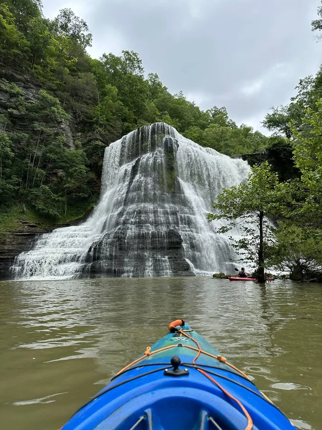
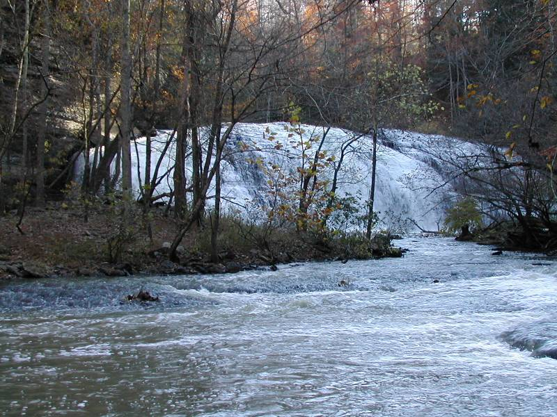
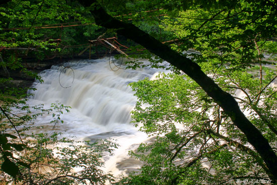

Before You Visit the Big Falls
Please Note: There is no access to the base of the falls from the park. The base of the falls can be accessed by boat or kayak from the Cane Hollow Recreation Area.
The park experiences high visitation. Please do not park on roadsides or in non-designated areas. If the parking lot is full, please consider visiting another state park in the area.

Middle Burgess Falls
Middle Burgess Falls is a good sized waterfall, and elsewhere it would be the star attraction, but it is outclassed by its much larger neighbor just downstream. Unless you boat up to Burgess Falls, you will pass the middle falls on your way to see the big falls.
The middle falls are easily seen from the trail that leads to Burgess Falls. There is an overlook that gives you a perfect head on view of the falls. From the brink of the lower falls you can walk upstream towards the base of the middle falls. However the view is obstructed,
and you have to cross the river to get a good view of the falls. Crossing the river is not too hard when the water is low, but is probably impossible when the water is high.!

Little Burgess Falls
Some of you are worried about the climb back up, but don't worry, this trail stays along the tops of the falls and is fairly easy
The 1.5-mile round-trip River Trail/Service Road Loop is a moderately strenuous hike taking visitors past four waterfalls on the Falling Water River.
The waterfalls are 20' cascades, 30' upper falls, 80' middle falls, and 136' lower falls in height.
